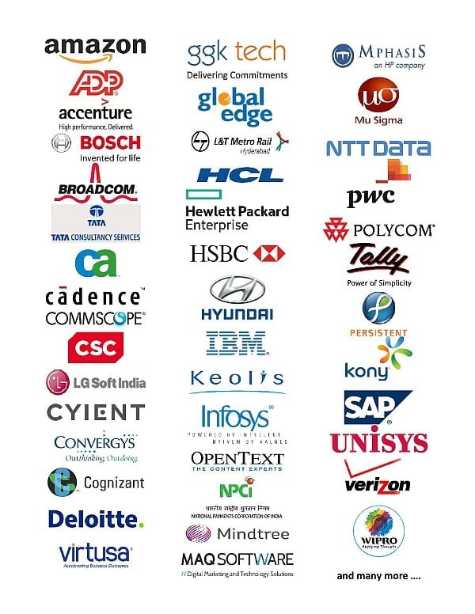

The College has a Centre for Student Services and Placement, which gives personal and career counseling to the students. The idea is to enable students to effectively cope with life at College as well as in their career. One of the major objectives of the centre is to help students in obtaining internships and placements in reputed companies across various industrial sectors. Assistance is also provided to students in procuring higher education opportunities. The College offers special coaching for GATE, TOEFL, and GRE to its students. They are also encouraged to present technical papers at seminars in other colleges with a view to improving their research and presentation skills. Also, during the last few years, several personality development programs have been conducted by experts from industry.
CVR’ites managed to grab the highest number of recruitments among similar aged institutions. For the 9th year in a row, CVR students have outshined 10s of colleges in securing the highest number of placements in several pool and On Campus recruitment drives.
For any specific assistance, please contact:
Organizations in which our students have secured good placements:
